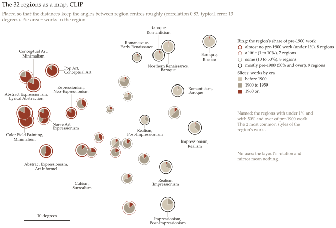

DuROOM
Discovering Unexplored Regions On and Off the Manifold
Avi Oberoi · MA thesis, Computational Social Science, University of Chicago, 2026
TL;DR
What are we after?
We started with the question of finding undiscovered artifacts, given the archive of all artifacts produced and known to humans (at least the ones we have a record of). But how do you look for something nobody has made yet, when you have no example of it? One way is to stop the archive at an earlier date, so the works made after that date are the undiscovered ones, i.e., a future we already know. So we freeze a corpus of artworks (WikiArt, 172,171 works) at 1900 and ask: can the works a culture has already made tell us where it has not been, when all we measure is how far a candidate sits from them? (A candidate is anything new, like a picture, that we want to place among the works.) The Introduction sets this up in full.
What do the works before 1900 tell us?
To measure how far anything sits from the works, we first need the works as points, so we pass each one through encoders (CLIP, DINOv3 and SigLIP, i.e., models that turn an image into a vector), and each work becomes a point on a sphere (why these 3, see Encoders and corpus). The works spread along directions that change from place to place, so they give us no reliable rule for where something far will lie (we lay out how we tested this in Q1). The later works vary along directions the earlier ones barely use (Q2). From 1900 to the 1960s each decade leaned further in one direction, and then held there. Along the way the decades moved first where Cubism and abstraction sit, then where Minimalism and installation sit (Q3 follows them decade by decade). Which works the others describe worst (i.e., most of the work is left over once we describe it by their main directions) depends on the past we measure them against (Q4), and in CLIP far means 3 different things (far from its nearest works, far from the corpus’s centre, or far for its own neighbourhood), so which far we take decides what we call new (if you want to know why, see Q5). So we take a work’s score, its mean distance to its 15 nearest works before 1900, and the bar, the score that 99% of the works before 1900 lie below. In CLIP about 26% of the works from 1960 on are over the bar, against 1% of the works before 1900 (the bar’s own setting), and most works from 1960 on sit in regions of CLIP where earlier works are almost absent (Q6 maps where they sit).

So can we go looking there ourselves?
People in AI have been searching for a long time. A* heads for a goal, guided by a heuristic, and novelty search, which has no goal, keeps moving away from what it has already seen (the Related work page tells this story in more detail). We have no goal either, only the score as a heuristic, so we search by it. A decoder (an image generator that paints a picture from a CLIP vector) paints every point the search tries, so each point becomes a picture we can look at (does it paint what we ask? Q8 checks). A picture is far when its score is over the bar in both observers (DINOv3 and SigLIP, the 2 encoders that read the pictures, Q7). Far alone is not enough, as noise is far too. And because we search over vectors but look at pictures, we keep a picture only when it is also faithful, i.e., it comes back near what we asked for (Q7). Painting simple requests with no search (midpoints between works, steps past a work, random points and the like) almost never gets there (we tried, in Q9). DuROOM search starts from 5 works painted before 1900, and each round it paints 32 pictures, keeps the far ones that are faithful, and starts again from where its best pictures read back (the full loop, step by step, is in Q10). To see what the search adds, we run the same loop told random scores, with its step (how far each request moves from where the search stands) and without it (our 2 controls, Q12).

Afterwards we also ask of each picture whether it is on the manifold (the art we have, as an encoder reads it), i.e., whether some real work of any date sits close to it, i.e., within the manifold line, or off it, where none does (Q7).

What did we find?
So, can the works before 1900 tell us where they have not been? Yes, in the sense we test it, i.e., a place is unexplored when a picture there is far from them (the full answer is in the Introduction). Later works are over the bar more often than earlier ones, as we saw (Q6), and a search held to faithful pictures can paint there: 46% of DuROOM search’s pictures are far and faithful, 2.9 and 1.6 times as often as our 2 controls (Q12). With no search, 0.5% of the pictures from the 6 kinds of request in Q9 are far and faithful, though requests read from noise images (CLIP’s reading of a noise or plain image) reach 20% (Q7). Most far and faithful pictures have a dated later work close to them, and so do the controls’ (Q11 shows the pictures beside the real works nearest them).
![Vertical bars on one scale from 0 to 50%, far and faithful as a percent of the pictures each way of asking painted, the count under each name: no search, 6 kinds of request, 0.5% (6 of 1,270); lines aimed at real later works, hatched because they use later art, 28% (20 of 71); a single walk with selection 25% (2,446 of 9,600); the random-score loop 16% (1,534 of 9,600); the no-step loop 28% (2,708 of 9,600); DuROOM search 46% (4,380 of 9,600). Set apart, for scale, real works repainted, as open bars: before 1900, held out, 0.2% (2 of 1,000); 1900 to 1969 5.1% (26 of 512); from 1970 on 14% (94 of 663).](figures/ways_of_asking_vert_v2c.svg)
![One row of three pictures: the starting work, Edgar Degas, Seated Woman pulling her glove, 1890; the picture DuROOM search painted from it in round 15; and the real work shown, Gene Davis, Black Dahlia, 1971. Beside the pictures, a fact line: in DINOv3 the work shown is the nearest real work, 0.440 apart, within the line (0.763); in SigLIP the nearest real work is Gene Davis, Flamingo, 1965, 0.528 apart, within the line (0.830), and the work shown is 0.654, within; no work dated before 1900 within the line in either observer. The last line beside the pictures quotes our reading by eye: 'Red and black vertical stripes closely resemble the real work's stripe pattern despite different colours.'](figures/search_find_pair_v5.svg)
What can’t we tell yet?
The comparisons measure what the search adds with this one decoder, and the decoder was not limited to images from before 1900. So whether what it paints comes from the works or from what the decoder already knows stays open, and a decoder trained only on works before 1900 is the next test (we take this up in the Discussion). And maybe that is the question we should have started with, i.e., when a system frozen in the past finds something far from it, how would we tell a discovery from a recollection, without a future to check it against?